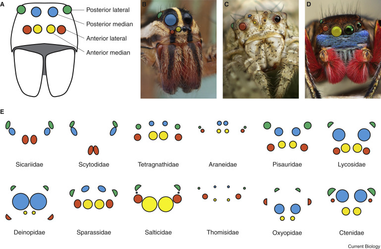
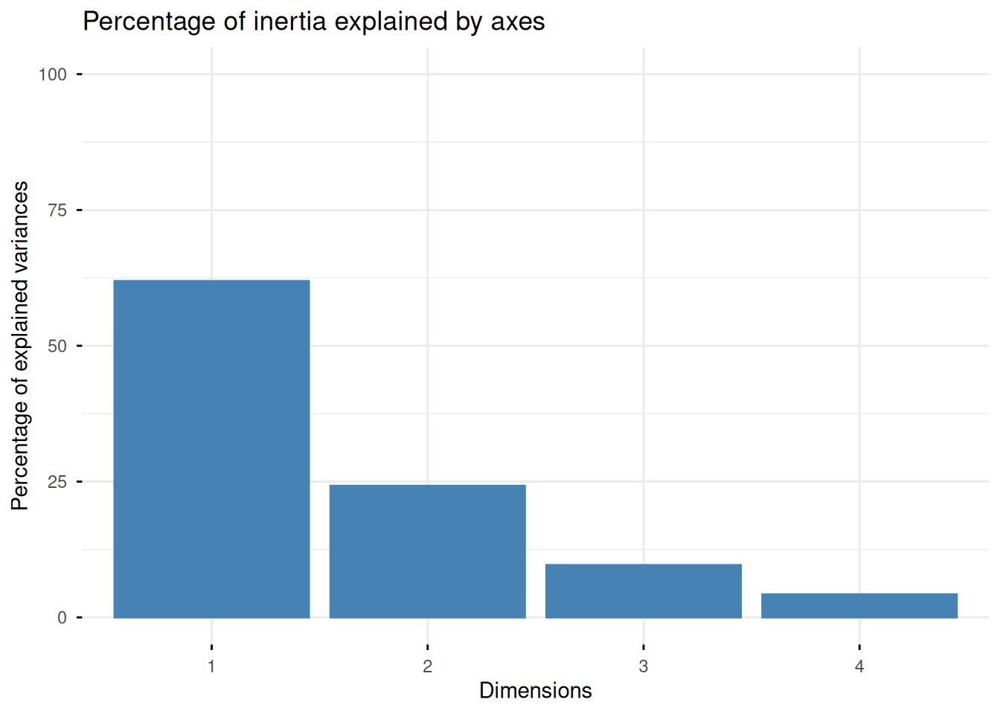
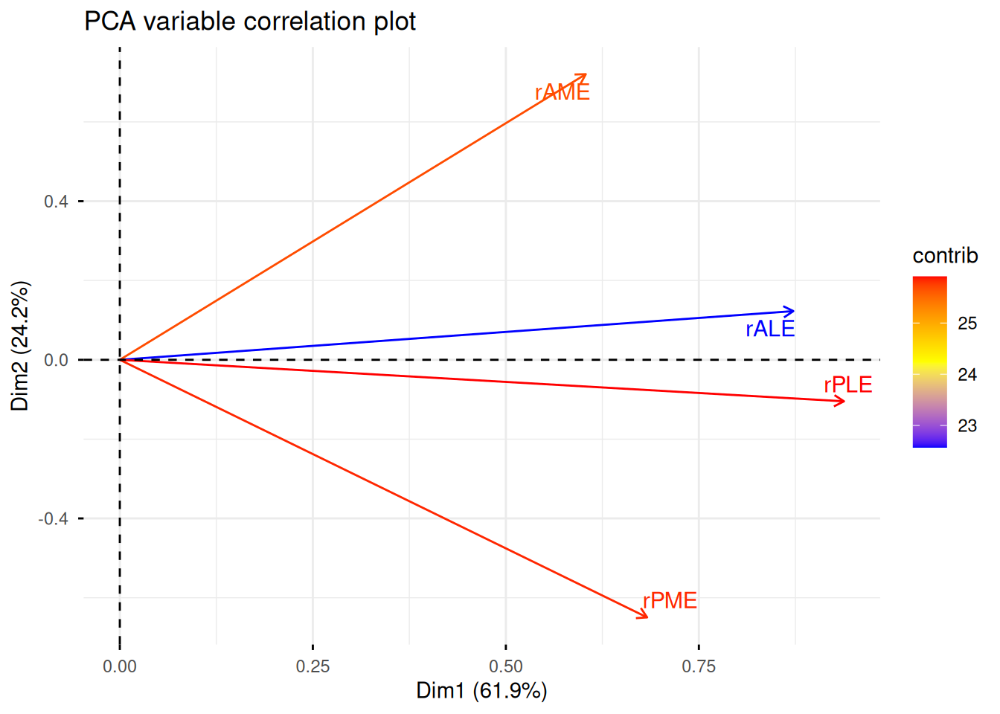
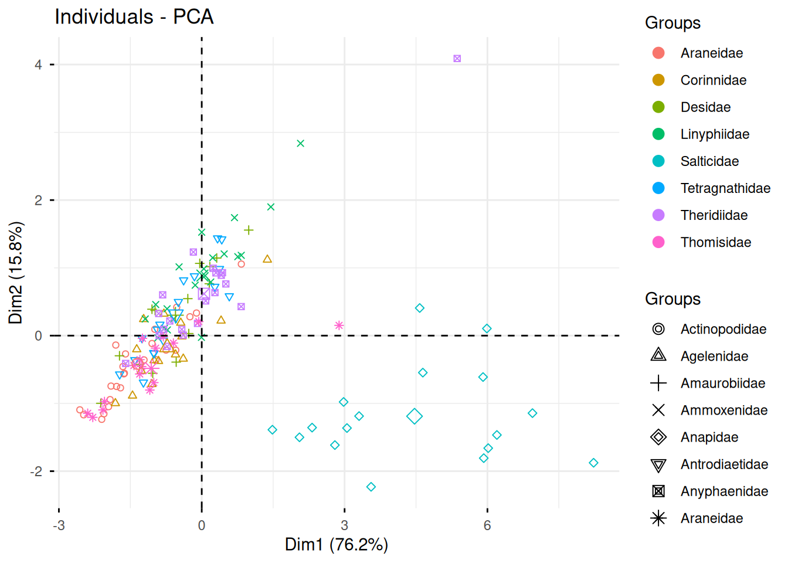

Principal Component Analysis (PCA) is a dimension reduction technique widely used in data analysis and machine learning for simplifying complex datasets. It helps us understand high-dimensional data by reducing the number of variables we need to consider while keeping as much of the original information as possible.
The main goals are to reduce the number of variables into a new set of uncorrelated variables called principal components, to visualize high-dimensional data in 2D or 3D, to detect patterns, clusters and outliers, and to remove noise and redundant information. For example, if you get a data set with 10 correlated variables, PCA can reduce it to 2 or 3 principal components that explains 90% of the variance and makes it easier to visualize.
The PCA, values have to be quantitative, and organized in a n x p matrix with p observations and n variables
We will be using the R package FactoMineR (Lê, Josse, and Husson (2008)).
Ecological Exemple
Eye size evolution in spider
Our example is based on the article Chong (2024). This study examines how eye size evolves in spiders, which possess up to four pairs of eyes of variable sizes. Researchers analyzed 1,098 individuals from 39 species and supplemented their data with approximately 474 additional species.
The researchers measured four different eye pairs simultaneously. PCA reduces this 4-dimensional dataset into interpretable components, making it easier to visualize and understand patterns.
terminal Family
Actinopodidae_Actinopus_insignis : 1 Araneidae : 24
Actinopodidae_Missulena_granulosa : 1 Linyphiidae : 21
Agelenidae_Agelena_labyrinthica : 1 Theridiidae : 20
Agelenidae_Barronopsis_barrowsi : 1 Salticidae : 17
Agelenidae_Draconarius_cangshanensis: 1 Tetragnathidae: 17
Agelenidae_Eratigena_atrica : 1 Thomisidae : 16
(Other) :467 (Other) :358
CW AME ALE PME
Min. : 0.240 Min. :0.0000 Min. :0.0000 Min. :0.0000
1st Qu.: 1.090 1st Qu.:0.0600 1st Qu.:0.0800 1st Qu.:0.0800
Median : 2.000 Median :0.1100 Median :0.1200 Median :0.1200
Mean : 2.453 Mean :0.1434 Mean :0.1535 Mean :0.1471
3rd Qu.: 3.000 3rd Qu.:0.1700 3rd Qu.:0.1900 3rd Qu.:0.1800
Max. :16.000 Max. :0.9900 Max. :0.8000 Max. :0.7400
PLE builder orbweb hanging
Min. :0.0000 Min. :0.0000 Min. :0.0000 Min. :0.0000
1st Qu.:0.0856 1st Qu.:0.0000 1st Qu.:0.0000 1st Qu.:0.0000
Median :0.1300 Median :1.0000 Median :0.0000 Median :0.0000
Mean :0.1556 Mean :0.5074 Mean :0.1163 Mean :0.3784
3rd Qu.:0.1900 3rd Qu.:1.0000 3rd Qu.:0.0000 3rd Qu.:1.0000
Max. :0.7000 Max. :1.0000 Max. :1.0000 Max. :1.0000
guild visual.incl.static visual.pursuit active
Min. :1.0 Min. :0.0000 Min. :0.0000 Min. :0.0000
1st Qu.:3.0 1st Qu.:0.0000 1st Qu.:0.0000 1st Qu.:0.0000
Median :3.0 Median :0.0000 Median :0.0000 Median :0.0000
Mean :3.6 Mean :0.1332 Mean :0.1015 Mean :0.1831
3rd Qu.:4.0 3rd Qu.:0.0000 3rd Qu.:0.0000 3rd Qu.:0.0000
Max. :6.0 Max. :1.0000 Max. :1.0000 Max. :1.0000
NA's :107
Largest Smallest rAME rALE
Min. :0.0200 Min. :0.0000 Min. :0.00000 Min. :0.00000
1st Qu.:0.1000 1st Qu.:0.0500 1st Qu.:0.04255 1st Qu.:0.05333
Median :0.1500 Median :0.0900 Median :0.05882 Median :0.06875
Mean :0.1935 Mean :0.1046 Mean :0.06448 Mean :0.07310
3rd Qu.:0.2200 3rd Qu.:0.1300 3rd Qu.:0.07692 3rd Qu.:0.08602
Max. :0.9900 Max. :0.5000 Max. :0.38462 Max. :0.23077
rPME rPLE rLargest rSmallest
Min. :0.00000 Min. :0.00000 Min. :0.02273 Min. :0.00000
1st Qu.:0.05128 1st Qu.:0.05446 1st Qu.:0.06587 1st Qu.:0.03550
Median :0.06548 Median :0.06859 Median :0.08036 Median :0.04808
Mean :0.06981 Mean :0.07316 Mean :0.09051 Mean :0.04734
3rd Qu.:0.08520 3rd Qu.:0.08696 3rd Qu.:0.10000 3rd Qu.:0.06015
Max. :0.28794 Max. :0.18750 Max. :0.38462 Max. :0.18235
rvar var
Min. :0.000e+00 Min. :0.0000000
1st Qu.:7.308e-05 1st Qu.:0.0001667
Median :1.587e-04 Median :0.0005667
Mean :7.930e-04 Mean :0.0036358
3rd Qu.:4.614e-04 3rd Qu.:0.0020667
Max. :2.152e-02 Max. :0.0927333
The raw data set is composed of 473 observations of 24 variables .
Data preprocessing
We don’t want to analyze all species so we just keep the families. Also we keep relative variables instead of absolute ones in order to be able to compare spider families with different sizes.
Description of the quantitative variables :
rAME : relative Anterior Median Eyes (colored in yellow in (fig1?))
rALE : relative Anterior Lateral Eyes (colored in red in (fig1?))
rPME : relative Posterior Median Eyes (colored in blue in (fig1?))
rPLE : relative Posterior Lateral Eyes (colored in green in (fig1?))

Figure 1 — Typical arrangements of spider eyes and their modification across spider families
The PCA methodology begins by standardizing the data (center and scale variables)
spiders$rALE <- (spiders$rALE-mean(spiders$rALE))/sd(spiders$rALE)spiders$rAME <- (spiders$rAME-mean(spiders$rAME))/sd(spiders$rAME)spiders$rPLE <- (spiders$rPLE-mean(spiders$rPLE))/sd(spiders$rPLE)spiders$rPME <- (spiders$rPME-mean(spiders$rPME))/sd(spiders$rPME)summary(spiders) #all means are equal to 0
Family rAME rALE rPME
Araneidae : 24 Min. :-1.2774 Min. :-2.4207 Min. :-2.3562
Linyphiidae : 21 1st Qu.:-0.4344 1st Qu.:-0.6547 1st Qu.:-0.6253
Theridiidae : 20 Median :-0.1120 Median :-0.1442 Median :-0.1462
Salticidae : 17 Mean : 0.0000 Mean : 0.0000 Mean : 0.0000
Tetragnathidae: 17 3rd Qu.: 0.2465 3rd Qu.: 0.4277 3rd Qu.: 0.5196
Thomisidae : 16 Max. : 6.3423 Max. : 5.2207 Max. : 7.3626
(Other) :358
rPLE
Min. :-2.5659
1st Qu.:-0.6560
Median :-0.1602
Mean : 0.0000
3rd Qu.: 0.4839
Max. : 4.0103
Packages
library(FactoMineR) #to realize the PCAlibrary(factoextra) #to visualize data
Loading required package: ggplot2
Welcome! Want to learn more? See two factoextra-related books at https://goo.gl/ve3WBa
library(ggplot2) #to plot the results
PCA Analysis
We use the PCA function from FactoMineR (Lê, Josse, and Husson (2008)). Through a linear algebra decomposition called the singular value decomposition (SVD), PCA identifies orthogonal directions in the data space—the principal components—ordered by the amount of variance they explain, with the first component capturing the maximum variance, the second capturing the next highest variance while being uncorrelated with the first, and so on.
res.pca <-PCA(spiders,scale.unit =FALSE, # already centered-reducedquali.sup =1, # "Family" is qualitative and illustrativegraph =FALSE)
The output of the PCA() is a list of several components :
$eig (Eigenvalues)
A matrix containing eigenvalues, percentage of variance, and cumulative percentage of variance for each principal component
$var(Results for Variables)
$var$coord: Coordinates (correlations) of variables with principal components
$var$cor: Correlations between variables and dimensions (same as coord for standardized PCA)
$var$cos2: Quality of representation - squared cosine values showing how well variables are represented on each dimension
$var$contrib: Contributions of variables to each dimension (in percentage)
$ind (Results for Individuals/Observations)
$ind$coord: Coordinates of individuals on the principal components
$ind$cos2: Quality of representation of individuals on each dimension
$ind$contrib: Contributions of individuals to each dimension
$ind$dist: Squared distance of individuals to the origin
$call (Call Information)
Contains information about the function call
$svd (Singular Value Decomposition)
Contains the raw SVD components (if you want to have a deeper mathematical understanding of PCA)
Interpretation tips :
Coordinates indicate the position of a variable or individual on a dimension.
For Variables :
Coordinates = correlation between the variable and the principal component, it measures the strength and direction of the relationship
For Individuals :
Coordinates = position of the individual on the axis (score), it measures the relative position of the individual
Contributions indicate the weight of a variable or individual in the construction of the dimension.
For variables it measures the relative importance in constructing the axes
For individuals it measures the individual’s influence
Cos² values range from 0 to 1 and measures how much information about an element is preserved when we project it onto the principal components. When close to 1, it’s a good representation. Only well projected variables can be interpreted !
Data visualisation and interpretation
To visualize the results from the PCA, we can analyse the percentage of inertia explained by the principal components through the graph of inertia.
fviz_eig(res.pca, ylim =c(0, 100), geom='bar', main='Percentage of inertia explained by axes')
Warning in geom_bar(stat = "identity", fill = barfill, color = barcolor, :
Ignoring empty aesthetic: `width`.

Table of eigenvalue and percentage of variance
Percentage of inertia explained by axes
The two first axis explain more than 86% of the total variance so only two main components are selected for the analysis. The first dimension explains 61.9% of the variance while the second dimension explains 24.2% of the variance.
Only well projected variables and individuals can be interpreted. The sum of cos2 on Dim.1 and Dim.2 should be around 1.
fviz_pca_var(res.pca,col.var ="contrib",gradient.cols =c("blue", "yellow", "red"),repel =TRUE,title ="PCA variable correlation plot") #show how relative eyed sizes are correlated
Warning: Using `size` aesthetic for lines was deprecated in ggplot2 3.4.0.
ℹ Please use `linewidth` instead.
ℹ The deprecated feature was likely used in the ggpubr package.
Please report the issue at <https://github.com/kassambara/ggpubr/issues>.

Table of contribution of variables to the axes
Contribution of variables to the axes
All variables are contributing a lot to the first axis. However, lateral eyes (rALE and rPLE) explain the best the axis with contributions higher than 30%. On the other hand, medium eyes (rAME and rPME) explain the second axis with contributions respectively equal to 54% and 44%.
We can also plot the individuals into principal component space.
fviz_pca_ind(res.pca,geom.ind ="point",label ="none",habillage = spiders$Family, #to see if a family looks to contribute more to the axislegend ="none",repel =TRUE,pointshape =19)
Scatterplot of individuals on the two main axes
The individuals are mainly distributed along the first axis which can be interpreted as a gradient of variation in lateral eye size. Individuals are also concentrated around zero which means that a majority of spiders has similar eye proportions.
Because there are 106 families of species, we will concentrate only on the first height most frequent family in order to have a clearer vision.
top_families <-names(sort(table(spiders$Family), decreasing =TRUE))[1:8] #only frequent families to have a clearer graphspiders_sub <-subset(spiders, Family %in% top_families)res.pca2 <-PCA(spiders_sub, scale.unit =FALSE, quali.sup =1, graph =FALSE)fviz_pca_ind(res.pca2, habillage = spiders_sub$Family, #palette = "Dark2", #repel = TRUE,select.ind =list(name =NULL, cos2 =NULL, contrib =NULL),label="none" )

Scatterplot of individuals of the first height most frequent family on the two main axes
Graph of contributions by individuals :
#res.pca$ind$contrib#Axis 1top10_ind <-order(res.pca$ind$contrib[,1], decreasing =TRUE)[1:10] #the 10 individuals contributing the most to the first axistop10_ind_fam <-data.frame(Individual =rownames(spiders)[top10_ind],Family = spiders$Family[top10_ind],Contribution = res.pca$ind$contrib[top10_ind, 1]) #families associated to the individuals contributing the mosttop10_ind_fam
#Axis 2top10_ind_2 <-order(res.pca$ind$contrib[,2], decreasing =TRUE)[1:10] #the 10 individuals contributing the most to the first axistop10_ind_fam_2 <-data.frame(Individual =rownames(spiders)[top10_ind_2],Family = spiders$Family[top10_ind_2],Contribution = res.pca$ind$contrib[top10_ind_2, 2]) #families associated to the individuals contributing the mosttop10_ind_fam_2
When we visualise families, it looks like individuals from the Salticidae are atypical individuals because they are far on the first axis. In fact, looking at the contributions just above, those individuals have the highest contributions. For the first and the second axis, 7 out of 10 individuals are in the family Salticidae.
Figure 2 — Family Salticidae contributing the most to explained variance.
Conclusion
According to (var_contrib?), the first axis is positively correlated with the relative size of both the anterior and posterior lateral eyes (the red and green ones in (fig1?)). For the second axis, there seems to be an antagonistic relationship between the anterior and posterior eyes.
This provides information about how eye sizes evolve together. However, from an ecological perspective, it would be interesting to study whether body size or spider activity is linked to eye size, as done in the original article Chong (2024). For example, we could test whether nocturnal spider species have larger eyes than diurnal ones.
We performed a PCA to visualize the relationships between variables. The goal was also to reduce the dimensionality of the dataset. However, since our dataset includes only four variables, it is not the most suitable example to demonstrate the advantages of factorial analysis.
Lê, Sébastien, Julie Josse, and François Husson. 2008. “FactoMineR: A Package for Multivariate Analysis.”Journal of Statistical Software 25 (1): 1–18. https://doi.org/10.18637/jss.v025.i01.